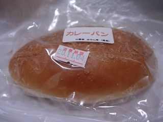
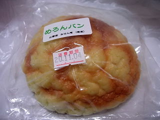

扇屋のカレーパン。
更新日 : 2008/11/3
お店の前を通ったら、パン始めましたみたいな紙が目についたので寄ってみました。
和菓子屋さんでパンの販売ってめずらしいですね。

このカレーパンはなんと！100円でした。最近200円くらいの値段のカレーパンが多い中、100円は凄い安いです。「カレーパンに200円払うのなんて嫌だ！」って思い最近カレーパンって買ってなかったですが、この値段なら気軽に買えますね。
ふんわりしたコッペパン風のカレーパンで、油こっくなくて軽かったです。おやつに丁度いいですね。

メロンパンも100円でした。